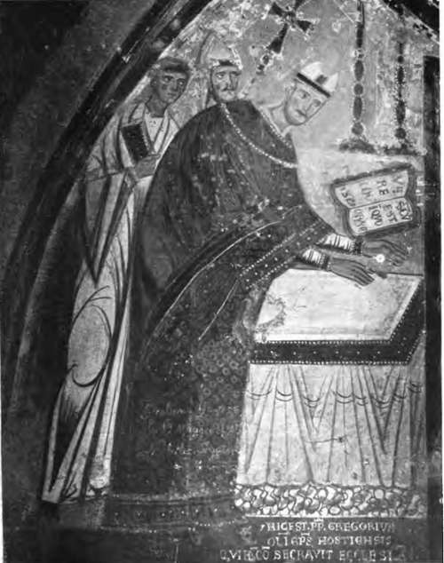
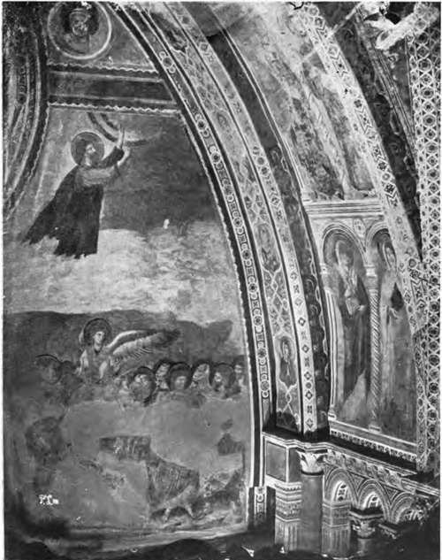

Historical Sketch. Part 4
Description
This section is from the book "Mural Painting", by F. Hamilton Jackson. Also available from Amazon: Mural Painting: -1904.
Historical Sketch. Part 4
At Subiaco, in the Sacro Speco, are some early frescoes, some of which, signed " Mag: Conxolus," are more Italian than Greek in type; while others, by Fr. Oddo, not equally good, but with a foretaste of Giotto, include a portrait of S. Francis of Assisi, with the square nimbus, indicating that he was then alive (it has been repainted). There is a figure of Innocent III. and the text of the diploma given by him to the abbey on June 24th, 1213. Since S. Francis was canonised S. Francesco at Assisi, and from the point of view of decoration it is difficult to see that Giotto made any step forward, though he did so no doubt in dramatic conception and natural gesture. The paintings which modern criticism allows to be Cimabue's are: the Madonna with four angels on the west wall oi the transept in the lower church, the paintings on the roof in the upper church representing the four Fathers of the Church, the Evangelists with angels (in the transept), medallions of Christ, the Virgin and two saints resting on angels like Victories and surrounded with festoons issuing from vases held by naked genii (very remarkable from the point of view of decoration), and perhaps the two upper series of the nave with sixteen scenes from the Old and sixteen from the New Testament, and the Ascension and Descent of the Holy Ghost, with medallions of SS. Peter and Paul above on the wall of entry. The lives of Christ and of S. Francis in the lower church, attributed to him by Vasari, are not his. Burckhardt ascribes them to the artist who painted in S. Piero in Grado near Pisa, which he thinks is of this period. The life of S. Francis in the upper church is principally by his pupils, and shows the transition to Giotto. Giotto (1267-1337) marks a great step forward, but his facial types were not as beautiful as those of Duccio of Siena, whose work, if individual beauty were the supreme end of painting, would be supreme among all produced in the thirteenth and fourteenth centuries, without excepting Orcagna even. His technique was Byzantine, and he may almost have been said to have looked at nature through Byzantine glasses, so great is the influence of that style upon his imagination. Giotto did not push naturalism to' extremes, but regarded his work still from the decorative standpoint, thinking of general effect and the scheme of colour first. He had the gift of seizing the central fact of his subject and making the most of it, an excellence which did not descend in equal measure to all his pupils. Undoubted works of his may be seen in the Arena chapel, Padua; the vault over the high altar in the lower church of Francis at Assisi, illustrating the vows of the Franciscan order, Poverty, Chastity and Obedience, and the apotheosis of S. Francis, which are perhaps his most celebrated works; at Florence in the Peruzzi and Bardi chapels in S. Croce, and in the Incoronata at Naples; and in other places where the assistance of his pupils is more evident Among them the most important were: Taddeo Gaddi (died 1366), Giotto di Maestro Stefano called Giottino, and Maso di Banco; Giovanni da Milano, Andrea di Cione called Orcagna (1308-1368), and Nardo his brother (died 1365); Agnolo Gaddi (died 1396), Antonio Veneziano, Francesco da Volterra (both of these worked in the Campo Santo at Pisa in the last years of the fourteenth century), and Spinello Aretino (died 1410). Spinello's work may be seen at Arezzo plentifully. At Florence paintings by the Gaddis, Giovanni da Milano, and others are in S. Croce; at S. Maria Novella by Orcagna, Simone di Martino of Siena, and others; at S. Miniato by Spinello Aretino; at Or San Michele, the Bargello and other churches by other members of the school. In the Campo Santo at Pisa are paintings by Pietro di Puccio, Buffalmacco (according to Yasari), Andrea da Firenze, Antonio Veneziano, and Francesco da Volterra, and at S. Francesco in the same city are fine works by Taddeo Gaddi. At Prato and Pistoia, also, as well as at Rome in S. Peter's and S. John Lateran, are compositions for which Giotto and his scholars are answerable. In most of these places one sees repetitions of the same subjects because they were required according to a certain pattern, and the painters supplied the demand, putting in as much beauty and dexterity as they could, and even rendering the emotions and aspirations of the soul with considerable success when the subject lent itself to such expression. They made the mistake of trying to translate metaphors into concrete images, of which Giotto's marriage of S, Francis with Poverty is perhaps the best instance, because he was the most powerful artist of the school.
POPE GREGORY IX. CONSECRATING THE CHURCH.
Wall-painting at Subiaco, early thirteenth century.
Simone di Martino was Giotto's great contemporary Wall-painting by Cimabue in the Upper Church of S. Francesco, Assisi at Siena (1265-1344). His largest work is in the Palazzo Pubblico at Siena, a symmetrical composition of the Madonna surrounded by saints, with a beauty in the form which the Florentines did not reach, an arrangement which was practically repeated some years later by Lippo Memmi in the Palazzo Pubblico at S. Gemignano. He worked from 1339 onwards at Avignon, and many of his frescoes are to be seen in the papal palace there and in the castle of Villeneuve-les-Avignon on the other side of the Rhone. At San Gemignano is a cycle of pictures by Barna da Siena, who was a pupil of Simone di Martino, as were the brothers Lorenzetti (1309-1348). The influence of these latter on Sienese art was so great that in the fifteenth century painters still reproduced some of their com-positions. The cycle of frescoes in the Sala della Pace in the Palazzo Pubblico at Siena, representing Good and Bad Government and their results, is said by Burckhardt to be the work of Pietro, but is more usually ascribed to Ambrogio Lorenzetti. In the chapel are paintings by Taddeo di Bartolo, who also painted in S. Francesco at Pisa, and the chapel of the Corporal at Orvieto was painted by a Sienese, Ugolino di Prete Ilario, who also helped to decorate the choir in conjunction with Pietro di Puccio about 1360, but the pictures have been a good deal restored and repainted.
THE ASCENSION.
Continue to: